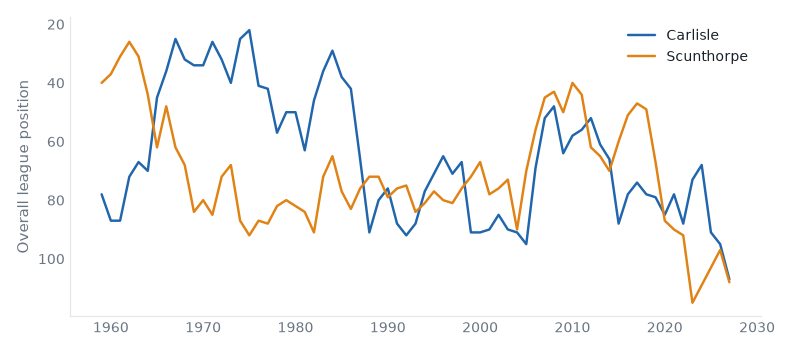
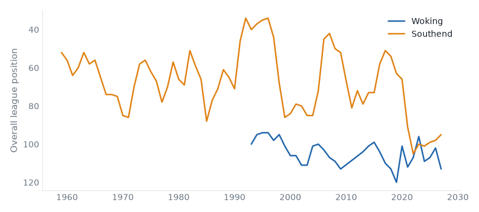
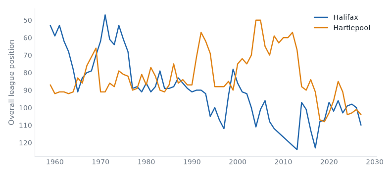
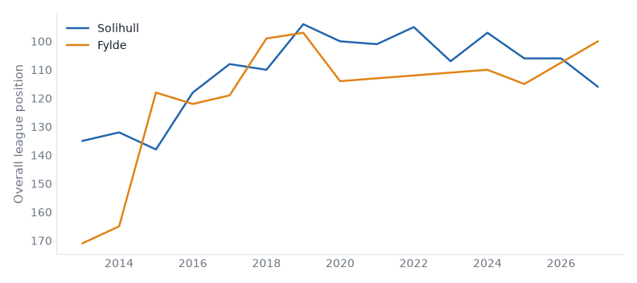
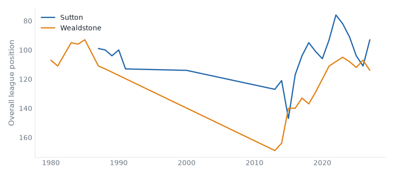
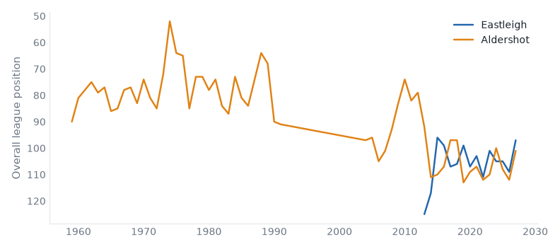

The Week Ahead
13 fixtures across 2 divisions, week of 31 August 2026.
Featured matches
Carlisle v Scunthorpe (National League, Mon 31 Aug)
Carlisle host Scunthorpe in the National League on Monday 31 August. Carlisle United are, on the balance of their record, a League One club; they are 2 divisions below that now; they sit 15th with 5 points from 4 games, form DWDL. Scunthorpe United live between League One and League Two; they are 1 division below that now; they sit 16th with 4 points from 4 games, form WLLD. They have met 45 times in league play since 1993: Carlisle United 16 wins, Scunthorpe United 21, 8 drawn.

| Season | Division | Pos | Pts | Outcome |
|---|
| 2027 | National League | 15th | 5 | In progress | | 2026 | National League | 3rd | 95 | Stayed | | 2025 | League Two | 23rd | 42 | Relegated | | 2024 | League One | 24th | 30 | Relegated | | 2023 | League Two | 5th | 76 | Play-off Promoted |
| | Season | Division | Pos | Pts | Outcome |
|---|
| 2027 | National League | 16th | 4 | In progress | | 2026 | National League | 5th | 82 | Stayed | | 2023 | National League | 23rd | 34 | Relegated | | 2022 | League Two | 24th | 26 | Relegated | | 2021 | League Two | 22nd | 48 | Stayed |
|
Woking v Southend (National League, Mon 31 Aug)
Woking host Southend in the National League on Monday 31 August. Woking belong in the National League — 89% of their 35 recorded seasons; they sit 21st with 3 points from 4 games, form LWLL. Southend United live between League One and League Two; they are 2 divisions below that now; they sit 3rd with 9 points from 4 games, form LWWW. They have met 10 times in league play since 1993: Woking 1 wins, Southend United 2, 7 drawn.

| Season | Division | Pos | Pts | Outcome |
|---|
| 2027 | National League | 21st | 3 | In progress | | 2026 | National League | 10th | 63 | Stayed | | 2025 | National League | 15th | 58 | Stayed | | 2024 | National League | 17th | 55 | Stayed | | 2023 | National League | 4th | 82 | Stayed |
| | Season | Division | Pos | Pts | Outcome |
|---|
| 2027 | National League | 3rd | 9 | In progress | | 2026 | National League | 6th | 81 | Stayed | | 2025 | National League | 7th | 68 | Stayed | | 2024 | National League | 9th | 65 | Stayed | | 2023 | National League | 8th | 69 | Stayed |
|
Halifax v Hartlepool (National League, Tue 01 Sep)
Halifax host Hartlepool in the National League on Tuesday 01 September. FC Halifax Town's record runs the length of the pyramid, but its centre of gravity is League Two; they are 1 division below that now; they sit 18th with 3 points from 4 games, form LWLL. Hartlepool United belong in League Two — 70% of their 69 recorded seasons; they are 1 division below that now; they sit 12th with 6 points from 4 games, form LLWW. They have met 61 times in league play since 1993: FC Halifax Town 26 wins, Hartlepool United 26, 9 drawn.

| Season | Division | Pos | Pts | Outcome |
|---|
| 2027 | National League | 18th | 3 | In progress | | 2026 | National League | 8th | 70 | Stayed | | 2025 | National League | 6th | 70 | Stayed | | 2024 | National League | 7th | 71 | Stayed | | 2023 | National League | 11th | 61 | Stayed |
| | Season | Division | Pos | Pts | Outcome |
|---|
| 2027 | National League | 12th | 6 | In progress | | 2026 | National League | 9th | 68 | Stayed | | 2025 | National League | 11th | 60 | Stayed | | 2024 | National League | 12th | 60 | Stayed | | 2023 | League Two | 23rd | 43 | Relegated |
|
Solihull v Fylde (National League, Mon 31 Aug)
Solihull host Fylde in the National League on Monday 31 August. Solihull Moors belong in the National League — 73% of their 15 recorded seasons; they sit 24th with 0 points from 4 games, form LLLL. AFC Fylde are, on the balance of their record, a National League North & South club; this season is their highest since 2025; they sit 8th with 7 points from 4 games, form WLWD. They have met 14 times in league play since 1993: Solihull Moors 5 wins, AFC Fylde 5, 4 drawn.

| Season | Division | Pos | Pts | Outcome |
|---|
| 2027 | National League | 24th | 0 | In progress | | 2026 | National League | 14th | 56 | Stayed | | 2025 | National League | 14th | 58 | Stayed | | 2024 | National League | 5th | 76 | Stayed | | 2023 | National League | 15th | 58 | Stayed |
| | Season | Division | Pos | Pts | Outcome |
|---|
| 2027 | National League | 8th | 7 | In progress | | 2025 | National League | 23rd | 40 | Relegated | | 2024 | National League | 18th | 55 | Stayed | | 2020 | National League | 23rd | 39 | Relegated | | 2019 | National League | 5th | 81 | Stayed |
|
Sutton v Wealdstone (National League, Mon 31 Aug)
Sutton host Wealdstone in the National League on Monday 31 August. Sutton United are, on the balance of their record, a National League North & South club; they are 3 seasons into a spell 1 division above that; they sit 1st with 12 points from 4 games, form WWWW. Wealdstone have spent their 48 recorded seasons between tiers 5 and 7; they sit 22nd with 2 points from 4 games, form DLLD. They have met 14 times in league play since 1993: Sutton United 5 wins, Wealdstone 2, 7 drawn.

| Season | Division | Pos | Pts | Outcome |
|---|
| 2027 | National League | 1st | 12 | In progress | | 2026 | National League | 19th | 47 | Stayed | | 2025 | National League | 12th | 60 | Stayed | | 2024 | League Two | 23rd | 42 | Relegated | | 2023 | League Two | 14th | 58 | Stayed |
| | Season | Division | Pos | Pts | Outcome |
|---|
| 2027 | National League | 22nd | 2 | In progress | | 2026 | National League | 15th | 56 | Stayed | | 2025 | National League | 20th | 53 | Stayed | | 2024 | National League | 16th | 56 | Stayed | | 2023 | National League | 13th | 60 | Stayed |
|
Eastleigh v Aldershot (National League, Mon 31 Aug)
Eastleigh host Aldershot in the National League on Monday 31 August. Eastleigh belong in the National League — 87% of their 15 recorded seasons; they sit 5th with 9 points from 4 games, form WWLW. Aldershot Town live between League Two and the National League; they are 1 division below that now; they sit 9th with 7 points from 4 games, form WDLW. They have met 24 times in league play since 1993: Eastleigh 12 wins, Aldershot Town 5, 7 drawn.

| Season | Division | Pos | Pts | Outcome |
|---|
| 2027 | National League | 5th | 9 | In progress | | 2026 | National League | 17th | 50 | Stayed | | 2025 | National League | 13th | 59 | Stayed | | 2024 | National League | 13th | 59 | Stayed | | 2023 | National League | 9th | 67 | Stayed |
| | Season | Division | Pos | Pts | Outcome |
|---|
| 2027 | National League | 9th | 7 | In progress | | 2026 | National League | 20th | 46 | Stayed | | 2025 | National League | 16th | 57 | Stayed | | 2024 | National League | 8th | 69 | Stayed | | 2023 | National League | 18th | 53 | Stayed |
|
Also this week
Premier League
Mon 31 — Aston Villa v Arsenal
National League
Mon 31 — Yeovil v Tamworth
Mon 31 — Forest Green v Altrincham
Mon 31 — Kidderminster v Barrow
Mon 31 — Harrogate v Gateshead
Mon 31 — Boston Utd v Hornchurch
Mon 31 — Worthing v Boreham Wood
Generated from football-data.co.uk results, Tiers 1–5, 1993/94–present.